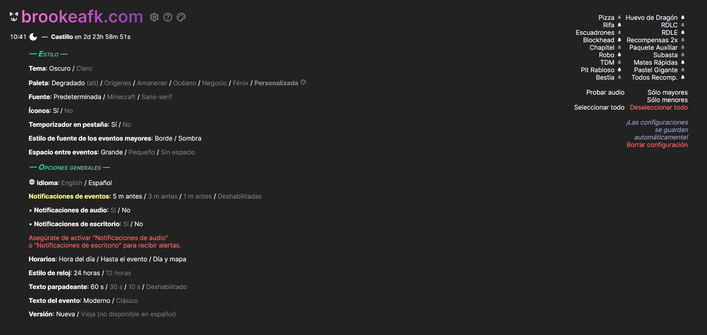

De brookeafk.com
Traducción al español por Ticha.
Also available in English. (También disponible en inglés.)
¡Bienvenido/a! Gracias por visitar este artículo de ayuda.
Uso básico del sitio
Configuración
Paletas personalizables
Preguntas frecuentes
Enlace al Discord de soporte
Uso básico del sitio
brookeafk.com es un sitio que muestra un listado de qué eventos ocurren y cuándo en el Hypixel Pit. Esto le puede ser útil a los jugadores si quieren participar en eventos específicos o si quieren averiguar qué está apunto de ocurrir en el juego.

En el sitio, los eventos son mostrados en orden. Los horarios a la derecha son una cuenta regresiva hasta que el evento ocurra y un horario en formato de 24 horas de cuando va a suceder el evento (en tu zona horaria). Para los eventos mayores, la cuenta regresiva y el horario se refieren a cuando la cuenta regresiva de tres minutos que ocurre en el juego hasta el evento empiezan, no el tiempo exacto en el que empieza el evento. Esto es para mantener la consistencia con Pit Supporter. Los eventos mayores también están indicados en el listado con un suave borde blanco alrededor del evento.
Configuración
Para cambiar la configuración de brookeafk.com, haz clic en el ícono de Configuración (settings). Un menú con opciones va a aparecer con varios elementos.
Los elementos son los siguientes:
- Tema: Cambia el color del fondo, de blanco a negro. ¡También cambia las paletas predeterminadas!
- Paleta: Cambia el color de los eventos en el listado. Hay doce paletas en total; intenta hacer clic en cada una para ver los colores. A partir de la versión 1.1.0, ¡puedes crear una paleta personalizada para usar en el sitio! Lee más sobre eso aquí.
- Fuente: Controla la tipografía de todo en el sitio. La fuente predeterminada es Inter, (la fuente usada en esta página). Minecraft es esta fuente. Sans-serif es la fuente predeterminada sans-serif de tu navegador (esta). Aprende a cambiar esto aquí: Firefox – Chrome – Edge
- Notificaciones de eventos: Notifica (a través del navegador) cuando ciertos eventos están a punto de empezar.
Una vez elegida una de las tres opciones, más aparecerán: - Notificaciones de audio: Una vez activada, reproducirá un sonido una vez que se cumpla la condición de tiempo establecida. (¡puedes probar el sonido presionando el botón “Probar audio” a la derecha!)
- Notificaciones de escritorio: Una vez activada, enviará una notificación a través del navegador una vez que se cumpla la condición de tiempo establecida. (IMPORTANTE: leer nota)
- Puedes configurar los eventos a notificar mediante íconos de campanas (notifications) que aparecerán una vez encendidas las notificaciones de eventos, en la derecha de la pantalla, al lado de los nombres de cada evento. Si el fondo de la campana está lleno, entonces una notificación será enviada para aquel evento.
- Horarios: Enciende o apaga ciertas cuentas regresivas y relojes/horarios. Hora del día muestra el horario en la vida real en el que el evento sucederá (ej. 11:56). Hasta el evento muestra la cuenta regresiva hasta el evento (ej. 23m 51s). Día y mapa muestra el horario en el juego y la cuenta regresiva (en la vida real) hasta el próximo mapa.
- Estilo de reloj: Cambia el estilo de los horarios, del estilo de 24 horas (17:13) al de 12 horas (5:13 pm).
- Texto parpadeante: Ajusta por cuánto tiempo el fondo y texto de un evento parpadearán en rojo hasta que comience. Lo puedes deshabilitar presionando
Nunca. - Texto del evento: Cambia la manera en la que los eventos serán presentados. Moderno usa el nuevo estilo, que pone el evento antes de la cuenta regresiva (Rey de la Escalera en 4m 10s — 12:01), mientras Clásico usa el estilo que usaba el sitio en 2022 y abrevia los nombres de algunos eventos menores (RDLC, RDLE, Todos Recomp.) (ej. 4m 10s: RDLE (12:01)).
- Versión: Cambia la versión del sitio de la actual (v1.x) a la vieja (v0.6.7).
NOTA: Ninguna versión anterior a v1.x está traducida, ni nunca lo serán. - En la parte derecha de la configuración, se puede activar o desactivar el mostrado de cualquier evento en la lista. Para hacer esto, haz clic en cualquier evento. Si el evento aparece con texto oscuro, entonces está desactivado.
Se pueden varios eventos a la vez; Solo mayores mostrará solo los eventos mayores, desactivando los menores, y Solo menores hará lo contrario.
Seleccionar todo y Desactivar todo mostrará u ocultará todos los eventos respectivamente.
Borrar configuración borrará completa y permanentemente todas las opciones que has cambiado.
Probar audio hará lo mencionado en el elemento de Notificaciones de eventos; reproducirá el sonido que se escuchará cuando aparezca una notificación.
NOTA: Varios usuarios de Chrome me dijeron que no reciben notificaciones cuando la pestaña que tiene brookeafk.com no está abierta. Este bug debería de estar arreglado a partir del 14 de abril de 2023. Si el problema persiste, asegúrate que Chrome pueda enviar notificaciones o usa otro navegador que no esté basado en Chromium (Firefox). Alternativamente, crea una nueva ventana de Chrome (presionando las teclas Control + N) y pon brookeafk.com ahí.
Si las opciones que has seleccionado no se guardaron por alguna razón, puedes ingresarlas directamente en el URL del sitio como parámetros. Para hacer eso, escoge qué opciones quieres implementar al sitio (ver más abajo), y añade sus parámetros al final del URL con un signo de pregunta, por ejemplo, https://brookeafk.com?palette=3&theme=light. Los parámetros disponibles se encuentran a continuación:
theme:darkpara seleccionar el tema oscuro,lightpara seleccionar el claro.palette:gradients0para seleccionar la paleta de colores por defecto,gradients1para seleccionar la alternativa,0para seleccionar la paleta Orígenes,1para Amanecer/Atardecer,2para Océano/Playa,3para Negocio/Chicle y4para Fénix/Siena. Si tienes una paleta personalizada, puedes poner su código en el enlace.font:0para usar Inter,1para usar sans-serif,2para usar Minecraft.clock:24para ver horarios de 24 horas,12para ver horarios de 12 horas.
Ten en cuenta que es posible poner parámetros raros en el URL (ej. clock=999). Aquellos parámetros inválidos o no funcionarán o completamente romperán el sitio (de tu lado). Para restablecer estos valores, presiona el botón Borrar configuración y URL.
Configuraciones importadas de la versión vieja de brookeafk.com también son compatibles con la versión moderna. Los parámetros en la URL tomarán prioridad sobre lo que tengas guardado en localStorage.
Paletas personalizadas
- Puedes crear una paleta personalizada a través de https://brookeafk.com/palette (no disponible en español).
- Crea una paleta haciendo clic en los cuadrados blancos a la derecha de los dieciocho eventos.
- Una vez que hayas terminado de diseñar tu paleta, dirígete al cuadro púrpura debajo de los eventos.
- Para importar la paleta, copia el enlace en la sección “URL” y pégalo en tu navegador, o copia el código y haz clic en el settings engrane, luego ve a Personalizada en el submenú Paleta sub-menu, ve a Importar, y por último pega el enlace y presiona Enter.
- Nota: Nombres de paletas no deberían contener más de 400 caracteres y puede que se rompan si contienen
¤ U+00A4 CURRENCY SIGN.
Puedes compartir una paleta compartiendo el enlace obtenido mediante el generador de paletas con tus amigos. Cuando lo abran, verán algo así (¡pruébalo!):

Si ellos seleccionan “¡Sip!”, podrán darle un nombre a la paleta. La paleta se guardará como una opción en el submenú Paleta:
Solo puedes tener una sola paleta personalizada guardada a la vez (... ¿por qué necesitarías más?), pero intentaré arreglarlo en el futuro.
Preguntas frecuentes
⸺ en orden de importancia ⸺
Los horarios en el sitio están mal
- Lo más probable es que esto sea un problema con el reloj de tu dispositivo. Recomiendo que arregles eso primero —va a generarte problemas en otros sitios también— pero si buscas una solución rápida, intenta añadiendo
?offset=MINUTOSal URL, siendoMINUTOSla cantidad de minutos que quieres desplazar los horarios en el sitio.https://brookeafk.com?offset=-180atrasaría tres horas todos los horarios . Usa?offset=0para restablecer la opción, o presiona el mensaje a la derecha de la configuración que menciona el desplazamiento.
No hay eventos
- Primero que nada, intenta recargar la página (presiona Control + Shift + R). Eso debería arreglarlo. Si eso no funciona, probablemente debes recargar la página de nuevo, porque a veces hay que hacerlo dos veces. Pero si eso no funciona, entonces me has dejado sin ideas. Si es así, contáctame aquí y explícame el problema (no hay eventos).
¿Qué hay de nuevo en el rediseño?
- Las notificaciones deberían de funcionar bien ahora. Aunque eso ya podría ser una característica revolucionaria, también agregué íconos, degradados, una cuenta regresiva al siguiente mapa (y un gráfico mostrando el siguiente mapa en la rotación, lo puedes habilitar dándole clic a la cuenta regresiva antes mencionada), unas configuraciones nuevas, este artículo de ayuda, traducciones, y ahora el sitio debería de correr muchísimo más rápido ahora. Tuve que reescribir muchísimas líneas de código que mi más jóven y malévola yo escribió sin cuidado a las dos de la mañana.
¿Cómo voy a la versión vieja de brookeafk.com?
- ¿Está el sitio muy estilizado y/o es muy moderno para tí? Ve a brookeafk.com/2022. No me enojaré. Lo prometo. ¡Ten en cuenta que ninguna versión anterior a la actual (v1.x) está traducida!
Necesito una versión más vieja del sitio.
- ¿Enserio? Aquellas versiones viejas eran (y siguen siendo) bastante terribles. Si deveras deseas usar mi código ineficiente y lleno de bugs, tengo cuatro versiones viejas disponibles para tí (¡no traducidas!):
v0.1 • v0.1.5 • v0.2.1 • v0.6.7.
¿Me puedes dar una frase abajo del sitio?
- Esas frases fueron dichas por gente que me apoyaron cuando brookeafk.com estaba en su fase arcaica de hoja de cálculo, una época en la que no tenía tanto apoyo como tengo ahora. Actualmente no estoy buscando más frases—lo siento.
¿Quién eres?
- ¡Soy Brooke! Hice este sitio hace más de un año para rastrear y estar al tanto de los eventos del huevo de dragón ya que era nueva y desesperadamente necesitaba la XP que estos dan. También ayudé a crear un par de cosas más, como la Wiki de Pit y este radical rastreador de estadísticas (no disponibles en español). También ayudé con un poco del desarrollo de Statsify.
¿Por qué has rediseñado el sitio?
- Para mi, se veía bastante anticuado—la fuente de Minecraft definitivamente no sumaba. Quería recoger un proyecto existente y ver si lo podía mejorar. La nueva versión también tiene mejoras de rendimiento, ya que había mucho que mejorar (la versión vieja del sitio intentaba cambiar el color de cada evento veinticinco veces por segundo). En su estado actual, el nuevo sitio corre significativamente más rápido que el viejo, inclusive teniendo en cuenta lo mucho más nuevo y moderno que se vé. Personalmente, creo que se ve mucho mejor ahora, pero si no estás de acuerdo, puedes regresar a la versión vieja aquí.
¿Por qué es tu código horrible?
- Este proyecto fue mi primer proyecto de JavaScript 🥲. Digo, si funciona, funciona… ¿cierto? Oye, ¿por qué estás viendo el código? Si no funciona, entonces es otra cuestión. La página de GitHub de la página está aquí.
¿Por qué no usaste ClumplunkleJS o [insertar cualquier librería de JavaScript]? ¿Por qué está todo del lado del cliente?
- No es necesario. Es un simple sitio con un simple propósito. ¿Para qué usaría algo así, igualmente? (ah, y tampoco me dan las ganas de aprender React)
Pero pudiste haber implementado el método BlorgleFlorgle() de Clumplunkle y con eso hubieras curado el cáncer y—
- cállate !!! !! ! ! !!! ! ! 1!
Leí en este artículo que agregaste traducciones en la última versión del sitio. ¿Cómo puedo contribuir?
- ¡Gracias por tu interés! Para contribuir alguna traducción, por favor, crea un boleto en el servidor de soporte. Ahí te indicaremos cómo puedes contribuir.
Veo que, si estás leyendo esto, es porque estás usando la versión en español del sitio, traducida por mi querido amigo Ticha (¡hola!). Si encuentras algo que esté mal con esta traducción o piensas que puedes optimizar algo en la traducción,
espaméa sus mensajes de Discord y llámalo un ganso tontopor favor visita este enlace. Es un documento de Google Docs que el traductor preparó para revisar cómo se vería una versión finalizada del artículo y para que algún ayudante sugiera algo a través de comentarios y/o sugerencias de modificación. Ticha promete leer todos y cada uno de los comentarios, pero, si no lo hace, dime y espamearé sus mensajes de Discord llamándolo un ganso tonto (promesa de meñique).
¿Necesitas ayuda adicional, o tienes alguna duda que no esté en este listado? Por favor únete al servidor de Discord de soporte y crea un boleto privado. Alternativamente, puedes contactarme a través de la página de GitHub del proyecto.
¡Gracias por leer!